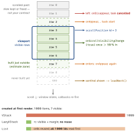

swiftui · folio
In one line: VStack builds every child now; LazyVStack builds a row only as it nears
the viewport (no reuse); List reuses platform cells but collects all ids up front.
ForEach ids decide which state, animation and callbacks belong to which datum — and since
iOS 17/18 the scroll view reports position, snapping, geometry and visibility declaratively.
Download PDF Print view LaTeX source
How it works
- Creation:
VStack = exact layout, all children loaded at once. LazyV/HStack, LazyV/HGrid (14) create rows on demand; unseen rows’ sizes are estimated. Apple: plain stack first, lazy when profiling says so.
List visits the whole collection first: rows = elements × views per
element (WWDC23). A variable count (if in ForEach) or AnyView forces it to build every row just to count them — filter the data, not the views.- Ids:
Identifiable or id: \.key. id: \.self hashes the whole value ⇒ editing a field = new id = row destroyed + re-inserted. Indices shift on insert/delete ⇒ state lands on the wrong row. Duplicate ids = undefined.
- Row lifecycle:
onAppear / .task run when a row is shown; onDisappear + task cancelled when it leaves; again on every scroll-back. Keeping an off-screen row’s @State is an implementation detail — durable row state lives in the model, keyed by id.
- Position (17):
.scrollPosition(id: $topID, anchor:) — two-way: reads the top-most target’s id, write it to scroll; needs .scrollTargetLayout() on the stack. 18: ScrollPosition value + .scrollPosition($pos): scrollTo(id:), scrollTo(edge: .bottom), viewID(type:). Older: ScrollViewReader.
- Snapping (17):
.scrollTargetBehavior(.paging) = container-sized pages; .viewAligned = settle on views of the scrollTargetLayout; or your own ScrollTargetBehavior.
- Observing (18):
onScrollGeometryChange(for:of:action:) maps ScrollGeometry (contentOffset, contentSize, contentInsets, containerSize, visibleRect) to an Equatable; action(old, new) fires only when that value changes. onScrollVisibilityChange(threshold: 0.5) per view; onScrollPhaseChange: idle / interacting / decelerating / animating.
- Look (17):
contentMargins(_:_:for: .scrollContent | .scrollIndicators) insets content inside the scroll area (still scrolls edge to edge); scrollTransition { c, phase in } (.topLeading / .identity / .bottomTrailing); visualEffect { c, proxy in } — both return a VisualEffect: no layout pass, no GeometryReader.
Example — snapping, paged feed
ScrollView {
LazyVStack(spacing: 8) {
ForEach(feed.items) { item in
Row(item: item)
.onScrollVisibilityChange { seen in
if seen { log.impression(item.id) } }
}
if feed.hasMore {
ProgressView()
.task(id: feed.items.count) { await feed.loadNext() }
}
}
.scrollTargetLayout()
}
.scrollPosition(id: $topID)
.scrollTargetBehavior(.viewAligned)
.contentMargins(.horizontal, 16, for: .scrollContent)
.onScrollGeometryChange(for: Bool.self) { g in
g.contentOffset.y > 800 } action: { _, far in showTop = far }
The lazy window

Traps
ForEach(items, id: \.self) on editable structs, UUID() created in body, or indices — lost row state, wrong row animates, duplicate-id warnings.if item.visible { Row } inside a List’s ForEach, or AnyView rows — every row built to learn the count. Filter the array..onAppear { load() } on rows = duplicate requests on scroll-back; guard isLoading + cursor, dedupe appended ids.- Sentinel with plain
.task may stay mounted after a page lands — no re-fire; .task(id: items.count).
scrollPosition(id:) without scrollTargetLayout() — binding never updates.- A
GeometryReader per row to read offsets — a layout pass each; use onScrollGeometryChange / visualEffect. onScrollGeometryChange watches the first scroll view only.
- Transform returns raw
contentOffset ⇒ action every frame; map to a Bool / page.
Remember
“Lazy builds late, List counts early; ask the scroll view, don’t measure it.”
Related: swiftui-performance-identity · swiftui-layout-system ·
animations · swiftui-async-task-data-flow · image-loading-pipeline · collectionview-compositional (UIKit)